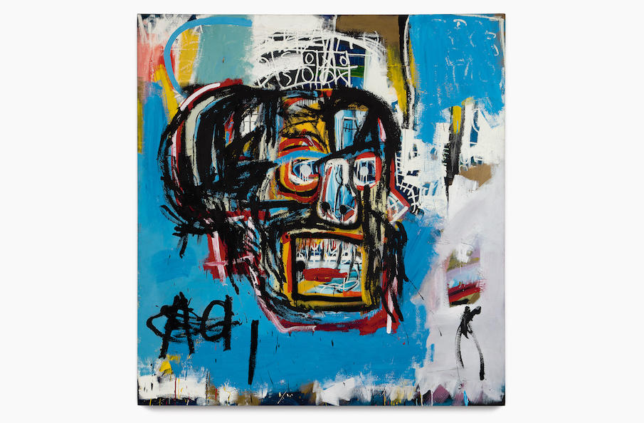

Abstrakt
Can you, the consumer, make meaning where originally there was none?
As of late, I have been doing some research work relating to chemistry. As part of an internship, I have been analyzing excitation trajectory data for the organic molecule pyrene. Specifically, I have been tracking 6 unique bond lengths throughout an entire trajectory, and trying to determine their correlation with the molecule’s “hops” through different excited states. Regrettably, after applying many different machine learning models, such as simple regression models and classifiers, little correlation was found, and alternative features that may better correlate with these “hops” are currently sought. Seeing the low accuracies, I was struck by the approach: an attempt to find meaning where none is apparent.
Last week, I was watching a movie about a person with a gambling addiction. Entitled Mississippi Grind, the story followed a heavily-debted man as he gambled the last of his savings on a journey down the Mississippi River, following an enigmatic man from nowhere who seems to be his lucky charm. Ostensibly, the movie was about the psychology of gamblers, and the serendipity of everyday life. The ending, however, was very abstract: the man who has lost all his money, save $100, because he didn’t know when to cash out, turns that $100 into half a million dollars overnight, following which he disappears, presumably to Machu Picchu. The film is great by the way, I would highly recommend it to anyone.
It was sitting there after the conclusion of the story that I found myself, thinking about what message, exactly, the writer/director team had been trying to convey. Was it about human desperation? Was it trying to promote gambling as a way to reconnect with the magic and mystery of the world? Was it trying to denounce gambling as a surefire way to lose all your money, excepting a supernatural kind of luck? In the midst of all this confusion, I was struck by another possibility: what if there was no message at all?
In 2017, a painting entitled Untitled (pictured above), by Jean-Michel Basquiat, was bought at auction for $110.5 million by Yusaku Maezawa, an art collector and a billionaire known for wacky Twitter antics. It can be said that the painting is “intensely subjective”; in other words, it is highly abstract. The discernible form is that of a skull. The rest is open to interpretation: do those red currents represent blood? Does the presence of a nose and nostrils mean it has a “face”? What’s up with the background? What emotion is causing it to grimace so? Basquiat was known for the social commentary of his pieces, addressing topics, such as racism, policing, and social structures, that are relevante even now. This skull, however, represents the class of paintings in which commentary is not readily offered, and instead the viewere must consider the message as they find it.
Abstraction is fun to look at and think about, but it can pose a serious challenge to anyone who wants definitive meaning from a work.
------------------------------------